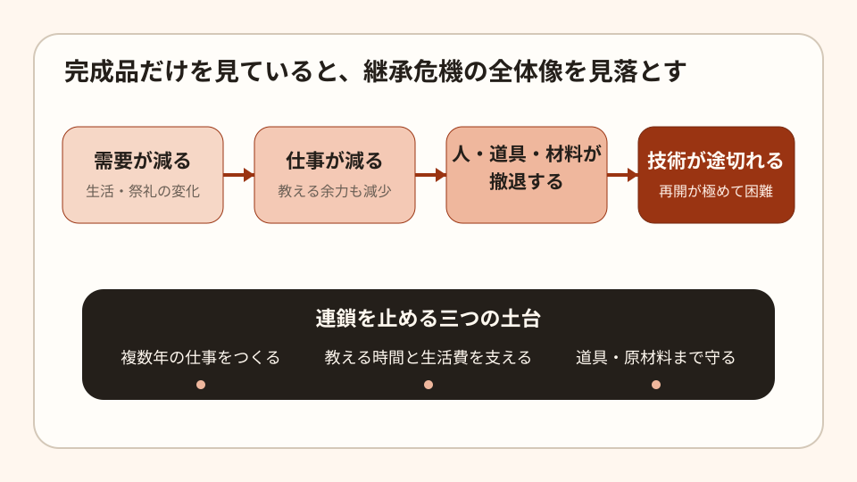

Social Issue Note
日本の伝統工芸・文化財保存技術はなぜ途切れかけているのか

日本の伝統工芸は、単に「昔ながらの商品が売れにくい」という話ではありません。文化庁は、生活様式と社会構造の変化によって 後継者不足が深刻化する一方、細やかな手仕事は海外で高く評価されていると説明しています。 失われようとしているのは商品だけでなく、材料を選び、道具を作り、修理し、次代へ教える一連の知識です。
数字で見る縮小
経済産業省の資料では、伝統的工芸品の生産額は1980年代のピーク約5,400億円から、2020年度には約870億円へ縮小しました。 従事者も1979年の約28万8千人から、2020年には約5万4千人となっています。一方、国が指定する伝統的工芸品は 2025年10月時点で244品目です。守る対象が広いのに、支える人と市場が細っている構図です。
| 指標 | 過去 | 近年 | 読み取れること |
|---|---|---|---|
| 生産額 | 約5,400億円（1980年代） | 約870億円（2020年度） | ピーク時の約6分の1 |
| 従事者数 | 約28万8千人（1979年） | 約5万4千人（2020年） | 5分の1未満 |
| 指定品目 | 244品目（2025年10月27日時点） | 全国に多様な継承対象がある | |
問題は職人の人数だけではない
文化庁の支援対象には、楮、ノリウツギ、漆、筆、刷毛、藍、柿渋、木炭などが挙げられています。 作品を作る本人がいても、専用の刃物、刷毛、接着材料、下地材を作る人がいなくなれば、従来と同じ品質で制作や修理を続けられません。
- 需要の縮小: 生活様式が変わり、日用品や祭礼用具として買う機会が減る。
- 所得と修業の不均衡: 習得に長い時間が必要でも、若手が生活できる仕事量を確保しにくい。
- 周辺技能の消失: 道具、原材料、修理、採取、加工の小さな担い手が先に廃業する。
- 教える余力の不足: 少人数の工房では、受注をこなしながら体系的に教える負担が重い。
- 一度失うと戻せない: 文書化しにくい手加減や素材判断は、実作業の反復なしに復元しにくい。
なぜ社会問題なのか
市場で売れない商品が退場するだけなら、通常の産業変化とも言えます。しかし伝統工芸と文化財保存技術には、別の性質があります。
- 文化財を将来修理する能力まで同時に失われる。
- 地域固有の仕事、材料生産、祭礼、景観が連鎖して弱くなる。
- 海外で評価される日本独自の価値を、日本国内で再生産できなくなる。
- 技術が途切れた後の復元費用は、継続して育成する費用より大きくなりやすい。
つまり、現在の販売額だけでは測れない将来の修理能力と文化的な選択肢を失う問題です。
継承策は「作品を宣伝する」だけでは足りない
| 必要な対策 | 具体策 | 確認する成果 |
|---|---|---|
| 仕事をつくる | 公共施設、文化財、祭礼用具の修理を複数年で発注する。 | 若手が修業中も得られる年間仕事量 |
| 教える費用を負担する | 指導者の時間、材料、失敗分を研修費として扱う。 | 修了人数ではなく、独立して作業できる工程数 |
| 供給網を守る | 道具・原材料ごとに生産者、在庫、代替困難性を点検する。 | 供給者が一人しかいない品目の減少 |
| 技術を記録する | 工程だけでなく、失敗例、材料差、判断理由を実物とともに残す。 | 別の担い手が記録を使って再現できるか |
| 入口を増やす | 短期体験ではなく、有給の見習いと段階別研修を用意する。 | 研修後3年の継続率 |
優先順位
最初に行うべきは、知名度の高い完成品のPRではなく、 代替できないのに担い手が一人または数人しかいない工程・用具・原材料の棚卸しです。 次に、そこで働く人が教える時間を確保し、学ぶ側に生活費が出る形で実地研修を組みます。 需要開拓は重要ですが、供給能力が消えた後では注文を増やしても応えられません。
結論
日本の伝統技術の縮小は、懐古趣味の問題ではありません。文化財を修理する能力、地域で仕事を生む力、 世界から評価される独自性を同時に失う社会問題です。完成品の職人だけを見るのではなく、 仕事、指導、道具、原材料を一つの継承網として守る必要があります。